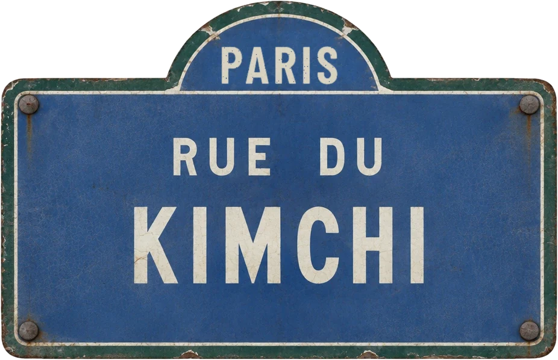

파리 한식당 10곳
파리에서도
밥은 먹고
다니니?
Korean restaurants in Paris · Restaurants coréens à Paris · 2026
어디 가지?

12 rue Gomboust
3 rue de la Michodière
22 rue Frémicourt
58 rue de la Croix Nivert
15 rue du Théâtre
11 rue du Théâtre
15 rue Violet
8 rue Viala
11 place du Commerce
9 rue Poirier de Narçay가보고 싶은 곳
한눈에
| 식당 | 주소 | 먹을 것 | 가격 | 가까운 역 | 에펠탑에서 |
|---|---|---|---|---|---|
| 국일관Kook Il Kwan인스타그램 · 홈페이지 | 12 rue Gomboust, 1구 | 굴보쌈, 고기 구이, 찌개 | 굴보쌈 24유로, 점심 메뉴 17~20유로 | Pyramides(7·14호선) 230m | 3.0km |
| 옥동식Okdongsik인스타그램 · 홈페이지 | 3 rue de la Michodière, 2구 | 돼지곰탕, 수육 | 돼지곰탕 15유로, 큰 그릇 17유로 | Quatre-Septembre(3호선) 110m | 3.2km |
| Happy Grill해피그릴인스타그램 · 홈페이지 | 22 rue Frémicourt, 15구 | 한식 고기 구이, 곱창, 양념 돼지갈비 | 돌솥비빔밥 19유로, 1인 21~30유로 | La Motte-Picquet – Grenelle(6·8·10호선) 190m | 1.3km |
| 화로Hwaro Grill인스타그램 | 58 rue de la Croix Nivert, 15구 | 한식 고기 구이, 생삼겹살 | 점심 18~24유로, 저녁 코스 28유로 | Avenue Émile Zola(10호선) 250m | 1.5km |
| 불판Bulpan BBQ인스타그램 · 홈페이지 | 15 rue du Théâtre, 15구 | 한식 고기 구이, 짬뽕, 탕수육 | 평일 점심 17유로, BBQ 코스 1인 33유로 | Charles Michels(10호선) 390m | 1.1km |
| 나드리Naderi인스타그램 | 11 rue du Théâtre, 15구 | 족발, 짬뽕, 백반, 찌개 | 백반 20~22유로, 비빔밥 17유로 | Charles Michels(10호선) 400m | 1.1km |
| 동네Dong Né인스타그램 · 홈페이지 | 15 rue Violet, 15구 | 분식: 김밥, 떡볶이, 치킨, 비빔밥 | 김밥 12유로, 떡볶이 15유로, 점심 세트 17~20유로 | Dupleix(6호선) 140m | 1.0km |
| 쌍봉로Ssang Bong Lo인스타그램 | 8 rue Viala, 15구 | 김밥(연어, 새우), 돈부리, 비빔밥, 브런치 | 김밥 9.50~14유로, 비빔밥 12.50~15.50유로 | Dupleix(6호선) 160m | 0.9km |
| 복고Bokko인스타그램 | 11 place du Commerce, 15구 | 짬뽕, 불고기 라멘, 찌개, 돌솥비빔밥 | 한 끼 20~30유로 | Commerce(8호선) 90m | 1.5km |
| 마시따Ma-Shi-Ta가보고 싶은 곳인스타그램 · 홈페이지 | 9 rue Poirier de Narçay, 14구 | 한식과 내추럴 와인 | 점심 세트 16.50~19.50유로, 저녁 본식 18~25유로 | Porte d'Orléans(4호선) 90m | 4.4km |
가까운 역과 에펠탑 거리는 OpenStreetMap 좌표로 잰 직선거리. 가격과 시간은 바뀌니 가기 전에 식당에 확인.